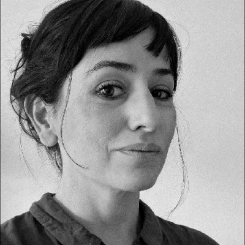

Case Studies
Work (04)
¡Hola! Soy Paula Azcue, diseñadora de productos digitales. Vivo en Buenos Aires, Argentina.
Trabajé en agritech, e-commerce, retail, medios y logística — liderando equipos de diseño, construyendo design systems e impulsando prácticas de user research donde no existían.
Aporto visión estratégica y método para desenmarañar problemas complejos, ordenar procesos y encontrar soluciones que articulen negocio, usuario y tecnología. He trabajado tanto en empresas con cultura de producto establecida como en contextos donde el diseño todavía se está construyendo.

Creo en una práctica del diseño pragmática y en constante evolución. Incorporo nuevas herramientas y formas de trabajo, incluyendo IA generativa y flujos agénticos, para potenciar la investigación, la toma de decisiones y los procesos de diseño.
Lidero el equipo de diseño en una transformación tecnológica y de marca de la compañía. El trabajo abarca ePak (plataforma de envíos para clientes corporativos), sistemas operativos internos, plugins de integración con plataformas de e-commerce (VTEX, Tiendanube, Magento) e identidad visual de sucursales, flota, señalética y eventos.
Logré la alineación entre brand design y design system: una visión compartida de cómo la marca se expresa en el mundo físico y en el digital. Instalé prácticas de discovery, entrevistas y validación temprana. Construí trabajo cross-funcional con producto, tecnología, negocio y operaciones.
Diseño end-to-end de productos core en la fase inicial de la transformación: arquitectura de información y user flows del nuevo backoffice comercial, flujos del nuevo Order Management System, inicio de la migración de ePak y mejoras en plugins integradores. Inicié el Design System de OCA y fomenté su construcción y adopción. Discovery, entrevistas con usuarios y pruebas de usabilidad.
Marketplace agro líder en Latinoamérica. Trabajo en la etapa de expansión regional a Brasil, Uruguay y Colombia.
Geolocalización end-to-end. Rediseño de la búsqueda con distancia y ubicación del usuario en home, listing y detalle. Reducción del rebote y mejora en conversión, especialmente en maquinaria pesada donde el flete es variable crítica de decisión.
Listing, filtros y detalle de producto. Iteraciones de layout y arquitectura para aumentar clicks al detalle. Reducción de fricciones en formularios con datos del usuario logueado.
Aportes transversales. Alianzas con el equipo comercial para acceder a Expoagro y Agroactiva, donde realizamos entrevistas de guerrilla con productores agropecuarios en el stand. Construcción del Design System con el equipo de librería. Trabajo con KPIs, mapas de calor y analytics. Presentaciones a CEO, Head of Product y negocio.
Diseño de apps para clientes externos (YPF, La Rural) y diseño del sitio editorial Agrofy News con su app.
Lideré la dirección de arte y el diseño de producto digital para las cinco marcas: Metro 95.1 (radio), Infocampo (agro), El Federal (interés general), Bacanal (gastronomía) y Pulso Urbano (urbano/cultural). Coherencia de sistema y diferenciación visual entre cada personalidad editorial. Presentaciones a CEO y Gerentes.
Diseño visual de interfaces web para cada marca, map flows, wireframes y prototipos en baja, media y alta fidelidad. User research, pruebas con usuarios y análisis de usabilidad. Branding y dirección de arte, diseño de campañas gráficas y piezas digitales y editoriales.
Coordinación del equipo de diseño, dirección de arte, presentaciones a clientes y manejo de proveedores. Clientes: Estudio Oppel, Cocinas DeOtroTiempo, Barugel Azulay, Kommerling, Hunter Douglas, Estudio Shilton-Stefani y revista TGM.
Diseño visual de interfaces web, diseño editorial y pie de imprenta, branding para terceros, retoque digital.
Diseño editorial, branding y proyectos web bajo coordinación del equipo senior.
Product Design end-to-end · UX/UI · Diseño de interacción · Arquitectura de la información · Mobile & Web
Discovery · User Research · Pruebas de usabilidad · Field Research · Entrevistas con usuarios
Design Systems · Component Libraries · Design Tokens · Accesibilidad
Design Leadership · Estrategia de producto · Colaboración cross-funcional
Figma · FigJam · Miro · Adobe Creative Suite · Notion
Claude · ChatGPT · IA generativa aplicada a discovery, análisis de research, prototipado y co-creación de artefactos de diseño
🇦🇷 Villa Crespo, Buenos Aires, Argentina